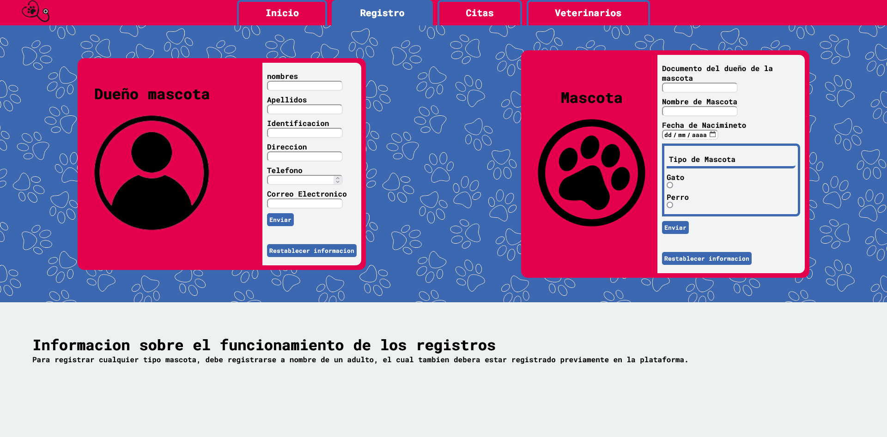

Mascota Feliz (Gestión veterinaria)
Una aplicación desarrollada en .NET con Azure Pages y SQL, diseñada para la administración eficiente de clientes, mascotas, veterinarios y citas médicas en clínicas veterinarias. Una solución digital para mejorar la gestión de clínicas veterinarias, asegurando un control rápido, seguro y eficiente de pacientes y profesionales.  Funcionalidades principales:
- ✅ Gestión de clientes (dueños de mascotas): Documento de identidad, nombre, apellidos, teléfono y dirección. Listado de clientes con opción de agregar y editar registros.
- ✅ Gestión de empleados (veterinarios): Datos: Documento de identidad, nombres, apellidos, teléfono y tarjeta profesional (código). Administración completa: Agregar y editar empleados.
- ✅ Registro y administración de mascotas: Datos: ID, nombre, raza, sexo (hembra o macho) y documento del dueño. Relación directa con el propietario y su historial médico.
- ✅ Historial médico y citas veterinarias:
- üìÜ Fecha de la cita
- üè• ID de la mascota y del veterinario
- üå°Ô∏è Temperatura y peso
- üìë Observaciones del veterinario
Cada mascota cuenta con un historial de visitas con datos como:
- ✅ Validación en todos los campos para garantizar la integridad y calidad de la información.
Tecnologías utilizadas:
- Backend: .NET
- Base de datos: SQL
- Frontend: Azure Pagess